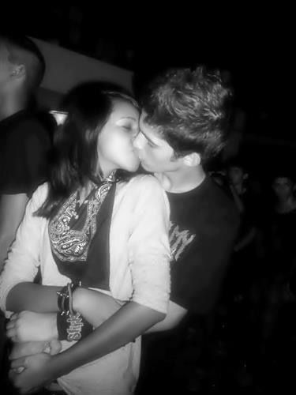
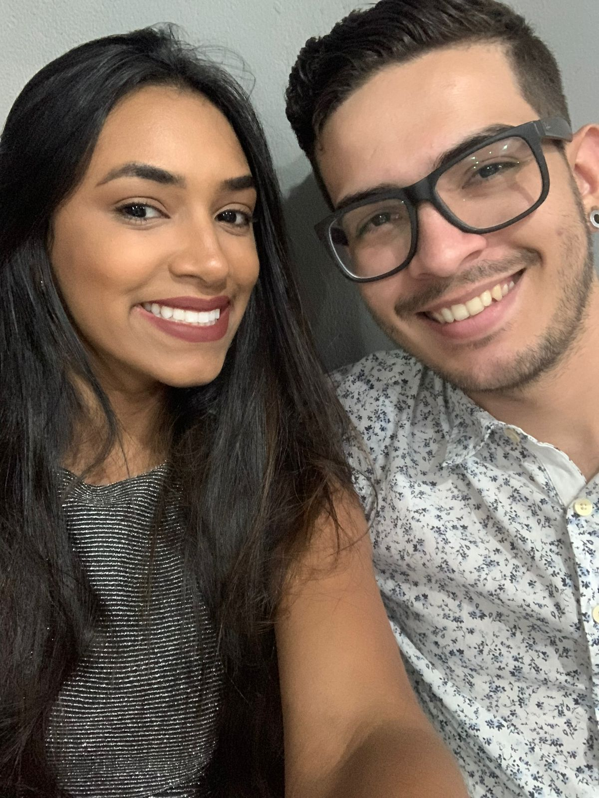
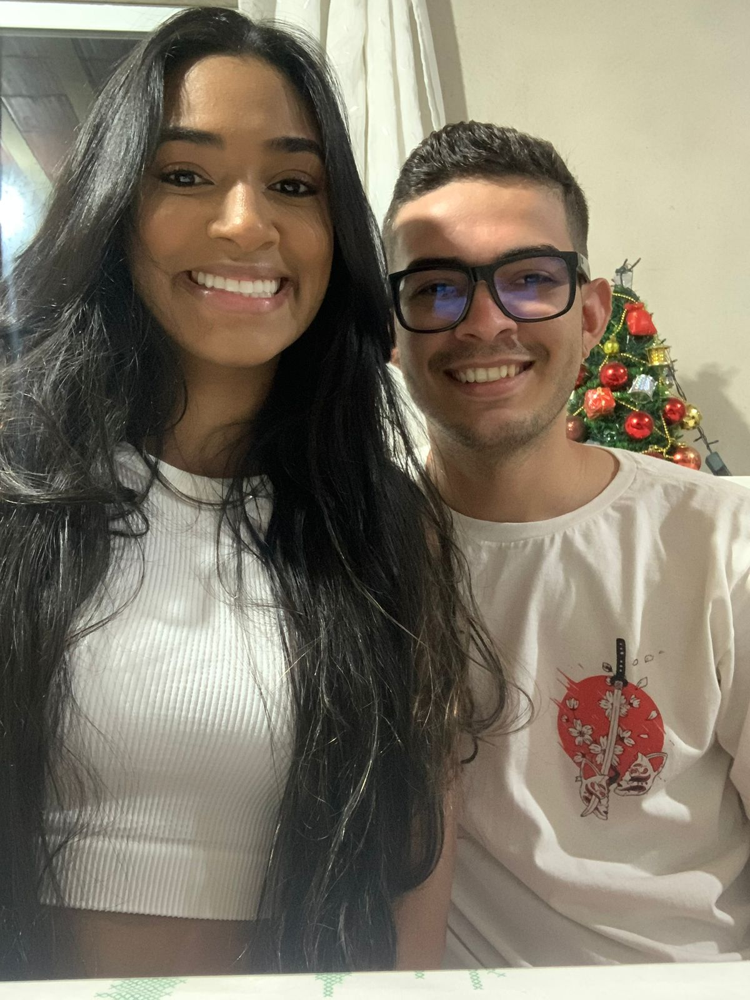

Há 14 anos, começamos essa história juntos de forma despretensiosa, dois adolescentes muito diferentes. Nunca poderíamos imaginar que construiríamos um sentimento tão forte. Deus na sua infinita sabedoria, quis que nossos caminhos se cruzassem. Ele sabia que pertencíamos um ao outro...

... inicialmente eu tinha receio de ter conhecido uma pessoa tão maravilhosa tão cedo e estragar tudo, e rapidamente esse sentimento mudou para gratidão a Deus, por me dar a oportunidade de ter você por mais tempo nessa vida tão curta que vivemos...
Juntos crescemos como pessoa, como par. Passamos por mudanças individuais e como casal. Vivemos fases maravilhosas, crises difíceis, mas sempre com a certeza de que tínhamos algo sólido.

Falhamos um com o outro. Criamos expectativas um pelo o outro. Tivemos mil maneiras de resolver nossos problemas, mas a maioria das vezes, não conseguimos. O orgulho falava mais alto. Erros podem custar caro.

Mesmo errando - e eu reconheço - dei meu melhor. Lutei minhas batalhas pessoais projetando que nosso futuro juntos seria a recompensa. Eu nunca pensei em outro plano, senão nós. Todo esse tempo separados, foi um tempo de reflexão, de aprendizado, de crescimento. E eu sei que você também teve suas perspectivas.
Infelizmente, as vezes o amor pode sofrer uma quebra. Não por falta de sentimento, mas sim por que as coisas não se encaixam mais. Ele se desgasta no meio da rotina, das diferenças e das palavras mal colocadas. É doloroso, mas tentamos seguir em frente. Todavia, quando o amor é verdadeiro, ele sempre encontra um jeito de voltar. E quando isso acontece, é como se o tempo tivesse parado, e tudo o que importa é estar junto novamente. Não estivemos separados por 25 anos como o caso do gif abaixo, mas esses 9 meses longe um do outro, foram os mais longos da minha vida. Nunca faltou amor, faltou fôlego. Fôlego se recupera! O coração insiste, e tenho que obedecê-lo; é tempo de redenção...
Olhe pela janela...